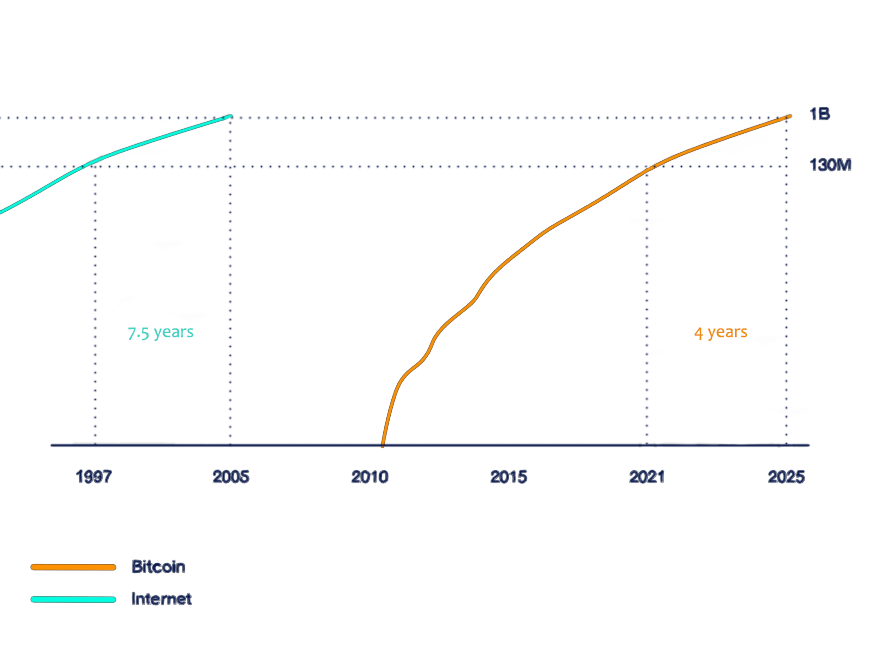
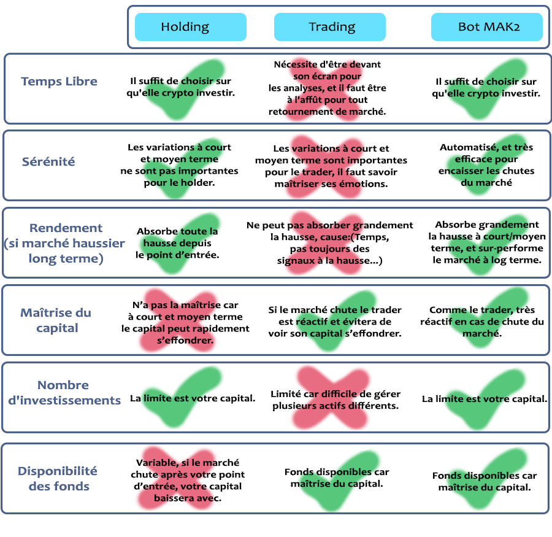

Beaucoup de chemins mènent à la réussite,
mais un seul mène immanquablement à l'échec, c'est celui de ne
pas essayer.
Avec internet il n'a jamais été aussi simple d'atteindre la liberté financière, l'opportunité que nous offre internet
aujourd’hui c’est les cryptos ! D’ici 2025, il y aura plus d’un milliard de personnes qui utiliseront les cryptos.

On ne s'en rend pas compte mais l'adoption de la cryptomonnaie au grand
publique avance à une vitesse hallucinante. Encore plus rapidement que l'adoption d'Internet!.
Mais le problème c'est que même avec cette grande opportunité il y aura des perdants ! En effet, et si vous investissez sur
la mauvaise crypto? Une crypto qui va s'écrouler avec le temps, ou alors vous investissez sur la bonne crypto mais vous l'avez pris
à un top du marché ? En quelque jours/semaines vous verrez votre capital s'effondrer brusquement.
Que faut-il faire alors pour faire partie du camp des gagnants ? Du holding ? Du trading ?
Et bien presque, le holding et le trading c'est bien, mais les deux c'est mieux!
Par là, il ne faut pas comprendre qu'on va Holder et trader en même temps,
mais plutôt utiliser un robot , le bot MAK2 qui va nous permettre d'avoir à
la fois la tranquillité, le temps libre d'un Holder, et la maîtrise de son
capital d'un Trader.

Vous vous dites sûrement que c'est trop beau pour être vrai ? Et bien regardons ensemble quelques backtest du robot.